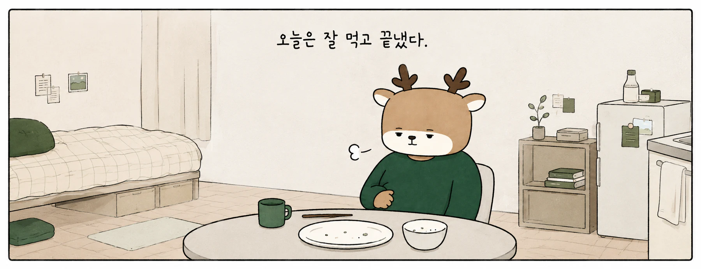
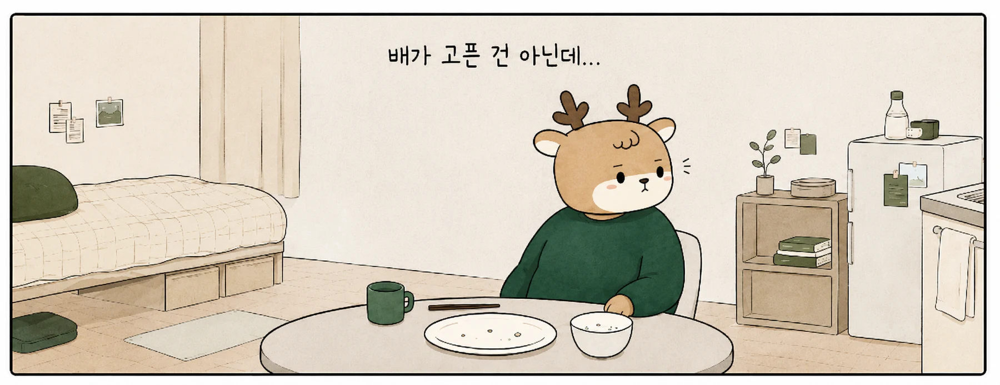
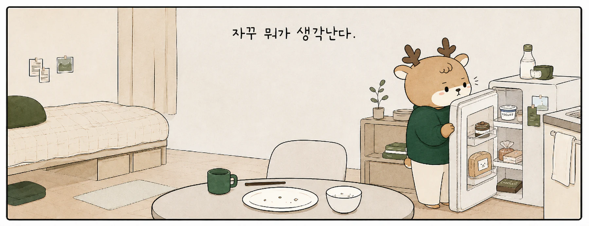
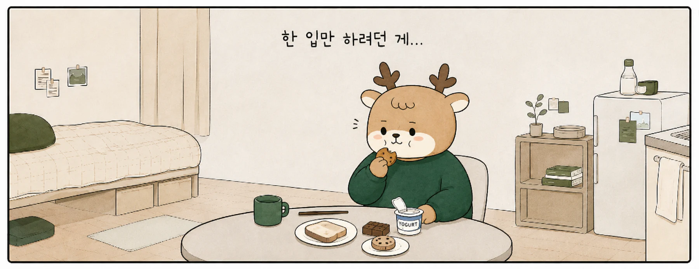
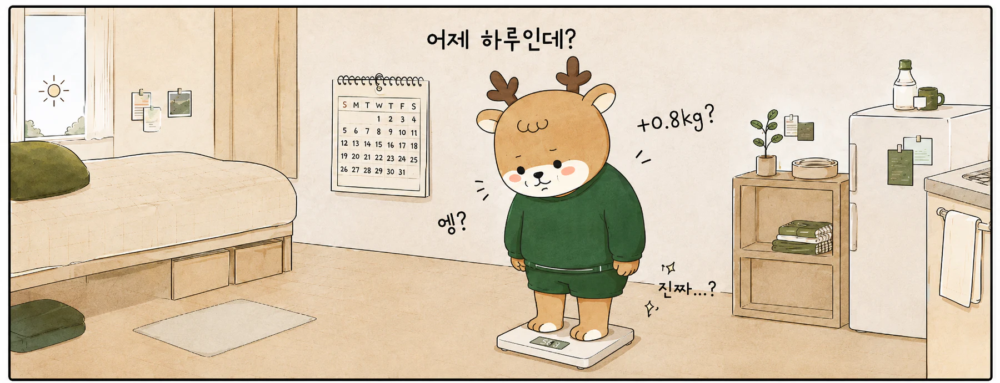

안녕하세요. 강남역과 교대역 사이, 서초동 디어한의원입니다.
퇴근 후 저녁을 먹은 시간은 7시 40분쯤이었습니다.
평소와 다르지 않은 식사였습니다. 양도 익숙했고, 식사를 마쳤을 때 포만감도 충분했습니다. 설거지를 하고 씻은 뒤 침대에 누웠는데, 밤 10시가 조금 넘자 냉장고에 넣어둔 요거트가 생각났습니다.
하나만 먹으려고 문을 열었습니다.
요거트 옆에는 주말에 사둔 빵이 있었고, 그 아래에는 먹다 남긴 초콜릿도 있었습니다. 대단한 폭식은 아니었습니다. 그래도 평소 같으면 지나쳤을 음식들이 그날은 하나씩 눈에 오래 남았습니다.
다음 날 아침 체중계는 전날보다 0.8kg 높은 숫자를 보여주었습니다.
다이어트를 해보신 분이라면 이 숫자가 얼마나 많은 생각을 끌고 오는지 잘 아실 것입니다. 어젯밤 냉장고를 열었던 장면이 갑자기 선명해지고, 오늘은 덜 먹어야 하나 싶은 계산이 시작됩니다. 그동안 잘 지켜오던 감량이 하룻밤 사이 틀어진 것처럼 느껴지기도 합니다.
그런데 달력을 보니 월경 예정일까지 나흘 정도 남아 있습니다.
지난달에도 비슷한 시기에 단것이 유난히 생각났고, 아침이면 손가락이 약간 붓는 느낌이 있었습니다. 월경이 시작되고 며칠 지나면 식욕도 다시 잠잠해졌습니다.
저희 디어한의원에서 궁금해지는 내용은 여기서부터입니다.
어젯밤의 몇 입이 오늘 아침 체중을 얼마나 설명할 수 있을지, 월경을 앞두고 반복되는 식욕 변화에 생리학적으로 설명할 수 있는 부분은 어디까지인지, 그리고 매달 비슷한 일을 겪는다면 감량 계획은 어떻게 세우는 편이 적절한지 차례로 확인하게 됩니다.






위 웹툰은 이해를 돕기 위해 구성한 상황입니다. 특정 환자의 진료기록이나 치료 결과를 재현한 자료가 아닙니다.
01 · APPETITE ACROSS THE CYCLE
생리 전에는 정말 더 먹게 될까요
월경주기와 음식 섭취량의 관계는 오래전부터 연구되어 왔습니다.
2025년 Nutrition Reviews에 실린 체계적 문헌고찰과 메타분석은 18세에서 45세 여성의 난포기와 황체기 에너지 섭취를 비교한 15개 데이터셋, 총 330명의 자료를 종합했습니다. 전체 분석에서는 황체기의 에너지 섭취량이 난포기보다 높은 결과가 관찰되었습니다. 원자료를 기준으로 계산한 평균 차이는 하루 약 168kcal였습니다.1
Tucker JA, et al. Nutrition Reviews. 2025;83(3):e866–e876. 원문 확인 ↗
이 숫자 하나만 떼어 놓고 읽으면 결론이 지나치게 빨라집니다.
해당 메타분석에 포함된 연구들은 서로 같은 방식으로 수행되지 않았습니다. 월경주기를 달력만으로 추정한 연구도 있었고, LH 검사나 호르몬 측정을 이용한 연구도 있었습니다. 섭취량을 기록하는 방법도 일정하지 않았습니다. 15개 데이터셋 가운데 통계적 차이를 확인한 자료는 8개였고, 나머지 7개에서는 유의한 차이를 확인하지 못했습니다. 연구진 역시 월경주기 판정과 섭취량 측정법의 차이를 중요한 한계로 제시했습니다.
진료실에서는 오히려 이 대목이 더 중요합니다.
월경주기에 따라 식욕이나 섭취량이 달라질 가능성은 분명히 연구되어 왔습니다. 동시에 모든 사람에게 같은 양상으로 반복된다고 단정할 수 있는 자료도 아닙니다. 결국 필요한 질문은 평균적인 여성이 얼마를 더 먹는가가 아니라, 지금 진료받는 한 사람에게 실제로 반복되는 변화가 있는가입니다.
저희 디어한의원에서는 생리 전 식욕을 이야기하실 때 지난달에도 비슷했는지부터 확인합니다. 배가 고파서 먹은 것인지, 식사를 마쳤는데도 음식 생각이 남았는지, 단것이나 빵처럼 특정 음식이 유난히 떠올랐는지, 월경이 시작된 뒤에는 며칠 만에 다시 평소 식사로 돌아왔는지를 차례로 묻습니다.
02 · BODY WEIGHT & WATER
그런데 먹었으니까 체중이 오른 것 아닌가요
아주 자연스러운 질문입니다.
전날 평소보다 더 먹었고, 다음 날 아침 체중이 올랐습니다. 두 사건은 바로 이어져 있으니 원인과 결과처럼 보입니다.
체중계의 역할은 생각보다 단순합니다. 어젯밤 무슨 음식을 먹었는지 알지 못합니다. 지방과 수분과 위장관 내용물을 따로 불러 조사하지도 않습니다. 아침에 올라선 몸 전체의 질량을 하나의 숫자로 보여줄 뿐입니다.
2023년 American Journal of Human Biology에 발표된 연구에서는 여성 42명을 한 월경주기 동안 주 2회 반복 측정했습니다. 월경기에는 첫 주보다 체중이 평균 0.45kg 높았고, 같은 시기에 세포외수분은 평균 0.47kg 증가했습니다. 다른 체성분 항목에서는 유의한 차이가 확인되지 않았습니다.2
Kanellakis S, et al. Am J Hum Biol. 2023;35(11):e23951. PubMed ↗
이 연구는 웹툰 속 상황을 그대로 재현한 자료는 아닙니다. 월경 며칠 전의 변화를 분석한 것도 아니고, 표본도 크지 않습니다. 그럼에도 한 가지는 분명하게 보여줍니다. 월경주기 중 관찰되는 단기 체중 변화에는 체수분 변화가 상당한 영향을 줄 수 있다는 점입니다.
그렇다고 전날의 간식이 아무 의미도 없다는 뜻은 아닙니다.
실제 섭취량이 증가했다면 그 역시 감량 과정에서 확인해야 할 정보입니다. 다만 다음 날 아침의 0.8kg을 전날 몇 입의 체지방 전환량처럼 읽어버리면 체중계가 제공한 정보보다 훨씬 많은 결론을 내려버리게 됩니다.
저희 디어한의원에서는 이럴 때 며칠을 더 봅니다. 월경이 시작된 뒤 체중이 원래 범위로 돌아오는지, 부종감은 언제 줄어드는지, 식사량 증가는 며칠 동안 이어지는지 확인합니다. 하루의 숫자 때문에 다음 날 식사를 과도하게 줄였다가 저녁에 더 큰 허기를 맞는 상황은 피하는 편이 낫습니다.
03 · CLINICAL GUIDANCE
그런데 잠은 왜 묻는 걸까요
교대역에서 다이어트 한의원을 찾다가 디어한의원 진료실에 오셨다고 가정해보겠습니다.
체중 이야기를 하다가 갑자기 월경 날짜를 묻습니다. 어젯밤 간식 이야기를 하다가 손가락이나 얼굴이 붓지는 않았는지 확인합니다. 거기서 끝나지 않고 잠은 몇 시간 잤는지, 피로감은 어땠는지까지 이어집니다.
조금 뜬금없게 들릴 수 있습니다.
이 질문들은 생각보다 임상적인 배경이 분명합니다.
미국산부인과학회(ACOG)의 2023년 임상진료지침은 월경전장애를 평가할 때 식욕 변화와 음식 갈망, 복부 팽만과 체중 증가, 부종, 수면 관련 증상을 함께 다룹니다. 국제 월경전장애학회(ISPMD) 합의문 역시 진단과 평가에서 증상의 반복성과 월경과의 시간적 관계를 중요하게 다룹니다. 영국 왕립산부인과학회(RCOG)도 증상 평가를 위해 연속된 월경주기 동안의 기록을 권고하고 있습니다.345
연속된 월경주기 동안 증상이 나타나는 시점과 소실되는 시점을 기록합니다.
진료실에서 “지난달에도 이랬나요?”라고 묻는 이유가 여기에 있습니다.
한 번 있었던 일이면 기억의 문제로 남습니다. 비슷한 시기에 반복되면 평가의 대상이 됩니다. 음식 생각이 많아진 시점, 체중이 올라간 날, 부종감이 심했던 날, 월경이 시작된 뒤 다시 안정된 시점을 함께 놓아보면 단순한 인상이 아니라 자료가 생깁니다.
04 · DEAR NOTE
지난달에도 냉장고를 열었는지가 꽤 좋은 정보가 됩니다
저희 디어한의원에서는 생리 전 식욕과 체중 변화를 상담할 때 월경 예정일 하나만 확인하고 끝내지 않습니다.
언제부터 음식 생각이 많아졌는지 묻습니다. 식사를 마친 뒤에도 먹고 싶은 마음이 남았는지, 실제 간식 횟수와 양이 늘었는지, 평소보다 단맛이나 짠맛에 더 끌렸는지 확인합니다.
체중계 앞에서는 또 다른 질문이 이어집니다.
아침에 반지가 꽉 끼지는 않았는지, 저녁에 신발이 답답하지는 않았는지, 복부 팽만은 어땠는지, 배변 횟수에는 변화가 없었는지 살펴봅니다. 수면시간이 줄어든 날이 많았다면 그 시기의 피로와 식사 패턴도 함께 봅니다.
월경이 시작된 뒤에는 다시 묻습니다.
식욕은 언제 잠잠해졌는지, 부종감은 며칠 만에 줄었는지, 체중은 어떻게 달라졌는지 확인합니다.
휴대전화 메모 몇 줄도 진료에 도움이 될 수 있습니다.
이 정도 기록만 있어도 “생리 전에 원래 그래요”라는 한 문장보다 훨씬 구체적인 상담이 가능합니다.
05 · DEAR CLINICAL VIEW
같은 +0.8kg이라도 확인해야 할 내용은 달라질 수 있습니다
같은 날 아침, 두 사람의 체중계에 똑같이 +0.8kg이 표시되었다고 가정해보겠습니다.
한 사람은 월경을 앞둔 며칠 동안 부종감과 복부 팽만이 심해졌고, 식욕도 약간 증가했습니다. 월경이 시작되고 사흘 정도 지나자 식욕과 체중이 이전 수준으로 돌아왔습니다. 지난달에도 비슷한 시기에 비슷한 변화가 있었습니다.
다른 한 사람은 월경주기와 관계없이 두 달째 야식 횟수가 늘고 있습니다. 퇴근 시간이 늦어지면서 점심과 저녁 사이가 지나치게 길어졌고, 밤 10시 이후 많은 양을 먹는 날이 주 4~5회 이어졌습니다. 주간 평균체중도 계속 상승하고 있습니다.
- 월경 -4일 식욕 증가
- 월경 -2일 부종감
- 월경 시작
- 월경 +3일 식욕·체중 이전 수준
- 지난달에도 비슷한 시기에 반복
- 최근 8주 야식 횟수 증가
- 점심–저녁 사이 긴 공백
- 22시 이후 식사 주 4–5회
- 주간 평균체중 지속 상승
오늘 아침의 숫자는 똑같지만, 진료실에서 확인해야 할 내용은 같지 않습니다.
또 다른 경우도 있습니다. 월경주기가 매우 불규칙하거나 최근 크게 달라졌을 수도 있습니다. 정서 증상이 심해 일상생활에 영향을 주는 경우도 있습니다. 이런 상황에서는 단순한 체중관리 문제로만 해석하지 않고, 필요한 의학적 평가가 있는지 함께 검토해야 합니다.
저희가 월경 날짜를 묻는 목적은 모든 체중 증가를 월경으로 설명하기 위해서가 아닙니다. 설명 가능한 부분을 확인하고, 설명되지 않는 부분은 별도로 남겨두기 위해서입니다.
06 · DEAR CLINICAL PRACTICE
디어한의원에서는 이 장면을 이렇게 봅니다
생리 전 식욕과 체중 변화는 다이어트 진료에서 자주 만나는 장면입니다.
그렇다고 같은 질문에 같은 답을 반복하지는 않습니다.
저희는 최근 체중만 보지 않습니다. 월경주기와 식욕의 관계, 실제 간식 횟수와 양, 특정 음식에 대한 갈망, 부종감, 수면시간, 피로, 배변 상태, 평소 식사 간격과 야식 빈도를 함께 봅니다. 이전 감량 경험과 최근의 재증가 양상도 진료에 포함됩니다.
여기서 판단하려는 것은 단순히 “참지 못했다”는 사실이 아닙니다.
월경을 앞두고 반복되는 변화가 있는지, 실제 섭취량 증가가 어느 정도인지, 단기 체중 변화에 체수분이 얼마나 개입하고 있을 가능성이 있는지, 생활 패턴이 그 장면에 어떤 방식으로 겹쳐 있는지를 순서대로 확인합니다.
그 과정에서 한약, 식사 조정, 생활관리의 우선순위도 달라집니다.
생리 전 며칠 동안 특정 음식 갈망이 반복되는 분과, 월경주기와 무관하게 야식이 누적되는 분을 같은 방식으로 볼 이유는 없습니다. 부종감과 팽만이 두드러진 분과, 수면 부족이 저녁 과식으로 이어지는 분도 마찬가지입니다.
교대역에서 다이어트 한의원을 찾고 계신다면, 최근 체중만 기억하고 오실 필요는 없습니다. 월경 시작일이 적힌 캘린더, 평소보다 유난히 먹고 싶었던 날, 부종감이 심했던 날, 갑자기 체중이 오른 날을 휴대전화에 적어두셨다면 그것만으로도 진료는 훨씬 구체적으로 시작될 수 있습니다.
저희 디어한의원에서는 어젯밤 냉장고 문을 열었다는 사실만으로 한 달의 감량을 실패로 결론내리지 않겠습니다. 왜 그날 유난히 어려웠는지부터 차분히 살펴보겠습니다.
FAQ
자주 묻는 질문
생리 전에 체중이 오르면 대부분 붓기인가요
월경주기 동안 체수분 증가와 함께 체중이 달라질 수 있다는 연구는 있습니다. 다만 개인의 체중 증가분 전체를 수분으로 계산할 근거까지 제공하지는 않습니다. 실제 섭취량, 부종감, 며칠 뒤 체중 변화 등을 함께 확인하는 편이 적절합니다.
생리 전에는 원래 식욕이 증가하나요
황체기의 에너지 섭취량이 난포기보다 높았다는 메타분석 결과가 있습니다. 동시에 차이를 확인하지 못한 연구도 적지 않습니다. 모든 사람에게 같은 정도의 변화가 나타난다고 보기는 어렵습니다. 개인별 반복성을 확인하는 과정이 필요합니다.
생리 전에 단것이 당기면 PMS인가요
식욕 변화와 음식 갈망은 PMS 또는 월경전장애에서 나타날 수 있는 증상 가운데 일부입니다. 진단에서는 월경 전 증상의 반복성, 일상생활에 미치는 영향, 월경 시작 후 호전 여부 등을 함께 평가합니다.
체중이 오른 다음 날 식사량을 줄여야 하나요
하루 체중만으로 식사량을 큰 폭으로 조정하는 방식은 권하기 어렵습니다. 최근 며칠의 섭취량, 부종, 월경 시기, 이후 체중 변화를 함께 본 뒤 조정 범위를 정하는 편이 더 적절합니다.
REFERENCES
참고문헌
- Tucker JA, McCarthy SF, Bornath DPD, Khoja JS, Hazell TJ. The Effect of the Menstrual Cycle on Energy Intake: A Systematic Review and Meta-analysis. Nutr Rev. 2025;83(3):e866–e876.
- Kanellakis S, Skoufas E, Simitsopoulou E, et al. Changes in body weight and body composition during the menstrual cycle. Am J Hum Biol. 2023;35(11):e23951.
- American College of Obstetricians and Gynecologists. Management of Premenstrual Disorders: ACOG Clinical Practice Guideline No. 7. Obstet Gynecol. 2023;142(6):1516–1533.
- Ismaili E, Walsh S, O’Brien PMS, et al. Fourth consensus of the International Society for Premenstrual Disorders. Arch Womens Ment Health. 2016;19(6):953–958.
- Royal College of Obstetricians and Gynaecologists. Managing premenstrual syndrome (PMS).
CONSULTATION
한 번의 숫자보다
반복되는 시간을 함께 봅니다
교대역에서 다이어트 한의원을 찾고 계신다면, 현재 식사와 수면, 월경주기와 체중 변화를 함께 확인해보세요.
네이버 진료 예약DEAR KOREAN MEDICINE CLINIC
디어한의원
서울 서초구 사임당로 143 3층 309호, 310호02-3486-1777
강남역과 교대역 사이, 서초동에 위치합니다.